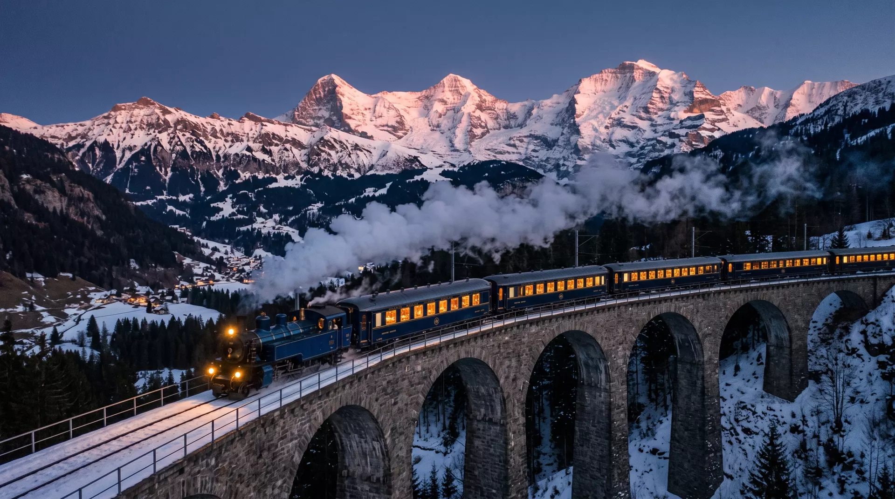
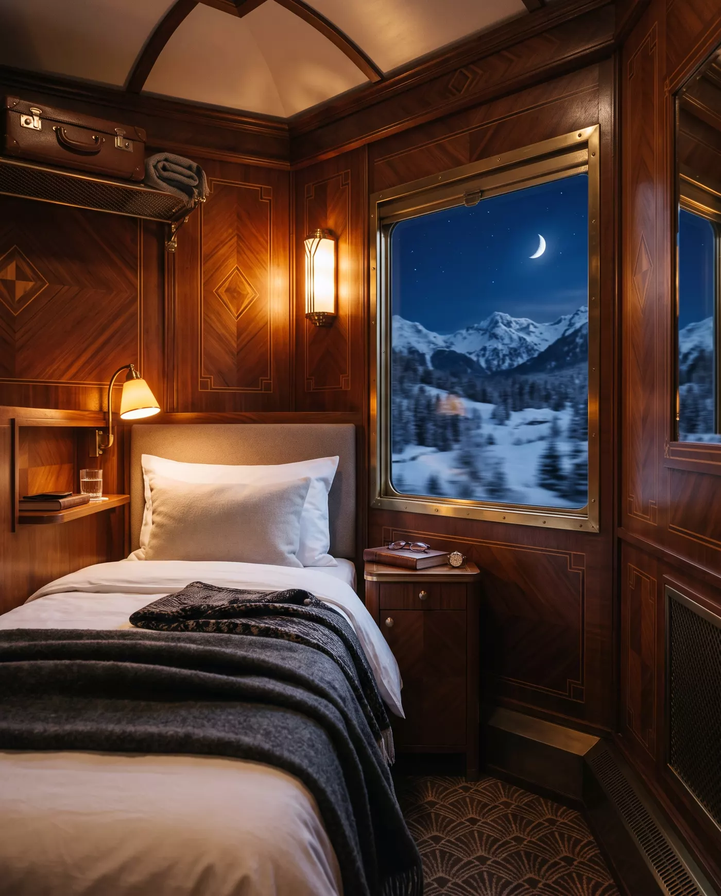

Grand-Voyage · Alpen-Nachtzug · seit 1931
Die Nacht gehört der Strecke.
Zürlenz ab 21:04 — St. Alvra an 07:26. Eine Nacht, elf Viadukte, zwei Tunnel, ein Erwachen im Alpenglühen.
Lehnen Sie sich zurück. Was Sie hier scrollen, ist die Nacht selbst: von der Dämmerung über den Mond bis zum ersten Rosa an den Graten. Das Fenster fährt mit.
Bordzeit 21:04
Zürlenz versinkt hinter dem ersten Hügel. Der Himmel hält noch eine Minute lang das letzte Kupfer des Tages, dann übernimmt das Blau.
Der Mond steigt über die Grate, die Lampe spiegelt sich im Glas. Zwei Tunnel schlucken die Welt für einen Atemzug — dann wieder Schnee, Sterne, Stille.
Kurz vor St. Alvra färbt die Sonne die Wände rosa, lange bevor sie das Tal erreicht. Der Kaffee kommt ans Bett. Sie sind da.
Nussbaum-Marketerie, Messing, ein Bett quer zur Fahrtrichtung. Drehen Sie am Dimmer — und sehen Sie, was die Nacht mit dem Raum macht.

Kabine Étoile · Wagen № 5
Die Wände sind Nussbaum und Ahorn, gelegt in Fischgrat und Rauten — Marketerie aus der Werkstatt Brenner & Fils, wie 1931. Die Leselampe hat einen eigenen Dimmer aus Messing; wer ihn ganz zurückdreht, bekommt statt des Lampenlichts den Mond.
Das Fenster fährt derweil weiter. Es hört nie auf zu fahren.
Wagen № 3, zweiundzwanzig Plätze, ein Flügeltürchen zur Küche. Serviert wird, was die Täler hergeben — auf Damast, bei 80 km/h.
Menü der Nacht
Der Küchenchef kauft am Nachmittag in Zürlenz ein und kocht, während draußen die Dämmerung fällt. Die Weinkarte ist kurz und ernst gemeint. Wer nach dem Digestif noch sitzen bleibt, sitzt meistens bis Predalin.
Ein Tisch ist in jeder Reservierung enthalten. Das Nachtmahl kommt auf Wunsch auch in die Kabine — bis ein Uhr früh.
Die Anzeigetafel in der Bahnhofshalle von Zürlenz, Gleis 7. Sie klappert noch. Wir haben es nie übers Herz gebracht, sie zu ersetzen.
| Zeit | Zug | Nach | Gleis | Hinweis |
|---|---|---|---|---|
Achtzehn Kabinen pro Nacht, nicht mehr. Wir antworten persönlich — meistens noch vor Mitternacht.
Winterfahrplan 1931/32 — pardon: 2026/27
Im Preis inbegriffen: Kabine mit privatem Bad, fünf Gänge im Speisewagen, Nachtmahl ans Bett, Weckruf vor dem Alpenglühen — und ein Fensterplatz für die ganze Nacht.
ab CHF 1'450pro Person · Kabine Étoile, Doppelbelegung